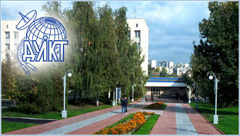

В 6 років я пішов у школу номер 4 одну з найкращих шкіл мого міста . Спочатку я дуже добре вчився , десь до 5 класу був відминником , ходив на різні олімпіади брав участь у різних наукових конкурсах та інше. Після 5 класу мене наука перестала цікавити тому я трохи "підзабив" на навчання , став вчитися гірше але всерівно був одним із найкращих учнів у класі. В 11 класі я зрозумів що треба братися за голову бо попереду ЗНО і треба його якось здавати , бо хотілось поступити на бюджет . Я почав ходити на додаткові був дуже активний на уроках , та багато займався дома . Хочу сказати що це мені багато чого дало .
Після успішної здачі ЗНО я вступив у Державний Університет Телекомунікацій на 126 спеціальність, де зараз я навчаюся на 1 курсі. Чесно кажучи, я думав буде складніше , насправді мені дуже подобається тут навчатися на данний момент. Я тут навчаюся ще досить мало щоб робити якість виснов4ки ,але на тому досвіді який я зараз дістав можу сказати , що система навчання тут класна
